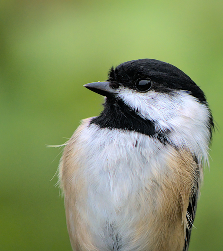

Black-capped Chickadee
Poecile atricapillus bird

Insectivorous songbird; nestlings depend almost entirely on caterpillars. Native trees rich in lepidoptera (aspen, willow, birch, cherry) anchor its food supply.
8 documented plant relationships.
shelters in
 Douglas Goldman, some rights reserved (CC BY-SA), uploaded by Douglas Goldman") ChokecherryPrunus virginiana
ChokecherryPrunus virginiana Paper BirchBetula papyrifera
Paper BirchBetula papyrifera Tom Norton, some rights reserved (CC BY), uploaded by Tom Norton") Pin CherryPrunus pensylvanica
Pin CherryPrunus pensylvanica bobkennedy, some rights reserved (CC BY-SA), uploaded by bobkennedy") Pussy WillowSalix discolor
Pussy WillowSalix discolor Harvey Barrison, some rights reserved (CC BY-SA)") Sandbar WillowSalix interior
Sandbar WillowSalix interior Douglas Goldman, some rights reserved (CC BY-SA), uploaded by Douglas Goldman") Trembling AspenPopulus tremuloides
Trembling AspenPopulus tremuloides Douglas Goldman, some rights reserved (CC BY-SA), uploaded by Douglas Goldman")
 KENPEI, some rights reserved (CC BY)")